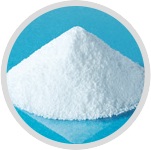
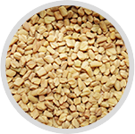
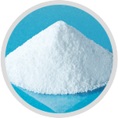
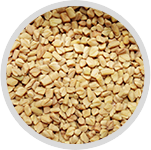

UltraCore Power Review:
How Testosterone Supplements Should Work
At what point in your life did you realize that you’re no longer the man you used to be?
Is it after you stopped going to the gym?
Is it when you started gaining weight?
Is it when you stopped being interested in sex?
The stories are different for every man, but what’s consistent in all these stories is that men break down eventually. All these years of commuting, taking care of the kids, and going to work will have its toll. We all feel down from time to time, and as we get older, our bodies get less and less capable of doing the things that we love.
Testosterone levels decline with age, and with it comes our source of all our manliness. Testosterone is the hormone that drives muscle growth, strength, mood, and sex drive. Every year, your testosterone levels drop, and while you may not feel or observe the symptoms of low testosterone yet, you will eventually experience the loss of muscle mass, weight gain, and of course – poor sex drive.
If you’d trace the roots of traditional medicine, you’d realize that impotence and poor libido were two of the symptoms our ancestors tried to cure. That’s why Chinese medicine and Ayurveda are full of herbs that are believed to improve a man’s virility and vigor. Now, with modern technology and science, companies have created some of the best supplements that are guaranteed to increase your testosterone and allow you to experience the life you’ve always wanted.
UltraCore Power Low T Booster
UltraCore Power is undoubtedly the world’s most talked-about testosterone-boosting brand today. With plenty of individuals, including celebrities and former athletes talking about UltraCore Power, it’s hard to ignore how successful UltraCore Power really is.
UltraCore Power’s breakthrough formulation has a very unique take on increasing testosterone levels, which involves 4 different stages of increasing testosterone. This is a major upgrade from the usual single-phase formulas that we see in most testosterone boosters and even with sexual enhancement supplements.
One major advantage of UltraCore Power compared to other supplements is its 3-supplement stack approach. UltraCore Power combines the power of three supplements, all formulated to work together, to yield superior results. The supplement stack racks up a massive 5525mg daily dose of testosterone-boosting ingredients, consistently flowing through your system, to increase your energy, strength, lean muscle mass, and confidence.
UltraCore Power is a membership-based product. This means that customers will receive a fresh supply of UltraCore Power every month, to ensure the continuous intake of the product. UltraCore Power recommends the daily intake of its supplement stack for at least 8-12 weeks to experience the best results. To make it more attractive for customers to continue taking the product, UltraCore Power has plenty of exclusive discounts and free products for its customers to enjoy.
Surely, at the end of the day, it’s all about the results that you get from the formula. We tested UltraCore Power to see if the results are significant enough in the first 8 weeks. Check it out:
Trying out UltraCore Power
A review wouldn’t be complete without the actual testing of the product. That’s why I opted to take UltraCore Power and consistently monitor my progress with a progress diary. Please note that the results detailed in this review were based on my experience, and you may or may not experience the same results I did. Plenty of factors can affect your results, such as your age, weight, lifestyle, and diet. For the record, I’m 5’10, 185lbs. I go to the gym at least once a week, I don’t particularly follow a diet, and the last time I took testosterone supplements was at least 3 years ago.
The first week of taking UltraCore Power
My first week of taking UltraCore Power was quite unconvincing, to be honest. There weren’t any big changes in my strength and stamina, but I notice that there’s a slight improvement in my energy levels. I don’t get tired as easily, and I don’t need coffee as much. I used to drink coffee at least 3 times daily, and with UltraCore Power, I don’t feel the need to wake myself up with coffee anymore.
I understand that supplements take time to work, and the fact that I already experienced a part of the results promised by UltraCore Power made it promising for me. In the past, I took supplements that took roughly 4-6 months to work, and at the time I felt that UltraCore Power wasn’t going to be one of those pills. The results were surprising, and it happened ahead of schedule.
Fourth week of taking UltraCore Power
I started noticing changes in my physique on the fourth week of taking UltraCore Power – this was right before I emptied my first bottle. I got my second month supply around this time, so I was sure I’d have enough supplements for another month. I also got a free supplement – a fat burner that I chose through their ClubUltraCore website. Also, I got a 40% discount on my second month – which was surprising! I never entered code or signed up for anything else. Basically, in my second month, I paid less, I got more supplements, and I was starting to notice the changes in my body.
My weekly workouts usually lasted for an hour, coursing through the weight room and sometimes I’d play pickup ball with the other guys at the gym. Now, my time at the weight room lasts about 90 mins at a minimum. I do more reps, and I lift a bit more than I used to. The performance was changing, and my rate of progress was definitely better than what I had before.
The second month of taking UltraCore Power
This is where the real magic of UltraCore Power happens. I realized that with its consistent stream of nutrients in my body, I’m more driven to train and work out. The changes in my performance pushed me to visit the gym at least twice a week, and that definitely sped up the progress in my physique. I used to weigh 185, now I’m down to 175, with muscle instead of fat. Body fat was hovering around 11-14%, and it was definitely showing in my physique. I got my 6-pack showing now, which I never had before, and it was a lot of changes in just two months.
Did it make me more confident? Absolutely. At work, people started to notice. I aced my stats, worked out a lot more than I used to, and I was closing women at will, as obnoxious as that might sound. I didn’t expect things to happen this fast, but I’m glad it did. I never saw myself as a patient guy, and with results this fast, I couldn’t help but be amazed at how good this product is.
UltraCore Power Ingredients
 



This review won’t be complete without backing my experience with hard facts – and that can be best explained by discussing the ingredients in the formula.
UltraCore Power has one of the most prolific ingredient profiles we’ve ever seen in testosterone-boosting supplements. By examining the ingredients, I learned that UltraCore Power doesn’t just improve testosterone and energy, but your mental performance and stamina as well. Here are some of the ingredients you should watch out for when you research about UltraCore Power:
KSM-66
KSM-66 is a supplement product created from the Ashwagandha plant. You can buy KSM-66 as an individual product, but UltraCore Power uses KSM-66 as an integral part of its testosterone-boosting system. Ashwagandha has been used for centuries as the main herb in Ayurvedic medicine, and it’s mainly used to increase vigor and vitality. KSM-66 is a modernized version of Ashwagandha and is clinically proven to reduce cortisol. By inhibiting cortisol, KSM-66 helps improve testosterone production.
LongJack/Tongkat Ali
Longjack, or more commonly known as Tongkat Ali, is the main testosterone-boosting agent of UltraCore Power. Studies show that Longjack is highly effective in improving testosterone production by stimulating the Leydig cells in the testes. It also helps reduce aromatization to improve testosterone preservation and managing estrogen levels in the body. Longjack is perhaps the most prolific ingredient in UltraCore Power as it has plenty of verified studies to prove its effectiveness as a testosterone-boosting agent.
ZMA
Bodybuilders and athletes know ZMA because of its proven performance-enhancing benefits. The combination of Zinc, Magnesium Aspartate, and Vitamin B6 is known to provide testosterone support and energy for quick and explosive movements, which is why athletes and professionals love taking ZMA supplements. UltraCore Power has integrated ZMA into its formula to further enhance the performance and energy derived from the formula.
Fenugreek
Fenugreek is an herb most commonly used by men to prevent prostate enlargement. The herb has proven results in reducing DHT levels to prevent abnormal prostate growth. DHT metabolizes from testosterone, and Fenugreek inhibits the enzyme that converts testosterone into DHT. This action not only inhibits DHT but also builds up testosterone levels. As a result, UltraCore Power further increases total testosterone levels while preventing the side effect caused by its metabolites.
L-Arginine
L-Arginine is a semi-essential amino acid that is commonly sourced from meat products. It acts as a precursor to nitric oxide, which makes blood vessels dilate. Through vasodilation, blood can easily pass through, which improves blood circulation. L-Arginine is known to have antihypertensive benefits through vasodilation, and its role in the UltraCore Power formula is to optimize oxygen and nutrient delivery to the muscles.
Epimedium Sagittatum
Epimedium is also known as Horny Goat Weed, one of the most common ingredients found in sexual enhancement supplements. It has been used for centuries as a cure for impotence. Recent studies show that Epimedium has strong testosterone-boosting properties that make it an effective libido booster.
Tribulus Terrestris
Tribulus terrestris is one of the most prolific anti-aromatase agents that prevent the conversion of testosterone into estrogen. It inhibits the aromatase enzyme, which converts testosterone into estrogen and its other forms. By inhibiting the aromatase enzyme, tribulus terrestris effectively improves total testosterone levels, while preventing the anti-androgenic effect of estrogen in the body.
Shilajit Extract
Shilajit is one of the main ingredients found in the booster supplements of UltraCore Power. Its main role is to support the inhibition of cortisol, initiated by the core ingredients in the main supplement, Male UltraCore. As a standalone ingredient, Shilajit is a prolific testosterone booster, with strong sexual enhancement properties.
Bioperine
Bioperine is also one of the core components of the booster supplements found in UltraCore power. Its main role is to enhance absorption by boosting the bioavailability of the nutrients absorbed from UltraCore Power.
UltraCore Power has plenty of other notable ingredients, but these are the ones that you should really pay attention to. These are some of the best ingredients you’ll ever find in testosterone-boosting supplements, and UltraCore Power further enhances this selection by selecting the right ingredients that are known to work together.
Frequently Asked Questions
We get all kinds of questions about the supplements that we review. To help you out, here are the answers to some of the most common questions that we get about UltraCore Power.
1Is UltraCore Power safe to take daily?
Yes. Absolutely. UltraCore Power is safe to take daily by healthy individuals. If you’re sick or being treated for an illness, make sure that you check first with your doctor before taking UltraCore Power, or any other supplement for that matter. UltraCore Power is formulated to be a balanced supplement, so you won’t have to worry about getting too much of one ingredient. Since UltraCore Power acts on your hormones and circulatory system, it’s best to make sure that you’re healthy, or at least have your doctor check if you can take supplements like UltraCore Power.
2How long do I need to wait before I experience results?
As it is with other supplements, your progress would depend on a lot of factors, including your age, weight, lifestyle, and diet. The average time it takes before a person experience results from any kind of supplement is between 3-6 months, but with UltraCore Power, it only takes 8-12 weeks. You may experience results sooner or later than the average, but rest assured, as long as you take UltraCore Power daily, you’ll improve your testosterone and energy levels to enhance your performance.
3How long does it take to get my UltraCore Power order?
After completing your order form online, you can expect your order to arrive between 3-7 business days. Customers who will buy the trio supplement can expect their orders to arrive earlier, at about 3-5 business days since UltraCore Power customers get expedited shipping for free.
4Can I get UltraCore Power through local stores?
UltraCore Power is exclusively available through the official distribution channels, UltraCorePower.com, and our official eBay and Amazon stores. Only buy from the official distribution channels to get the exclusive UltraCore Power benefits.
Verdict
UltraCore Power is indeed the best male performance-enhancing supplement available today. I estimate that it would at least take other companies at least 5 years to catch up with what UltraCore Power has created. Somehow, the guys behind UltraCore Power was able to get the best ingredients, the best formula, the biggest dosage, and all the free products, and still make the product affordable for consumers. When it comes to supplements, quality is not subjective. Either it works or it doesn’t – and for UltraCore Power, we’re definitely certain that the supplement works as advertised.